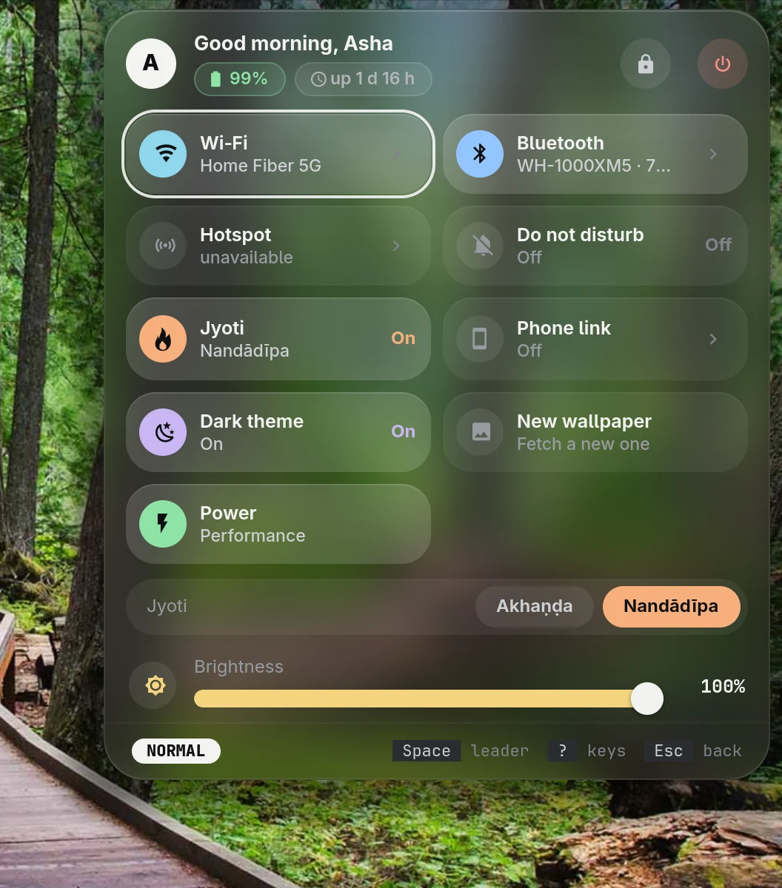
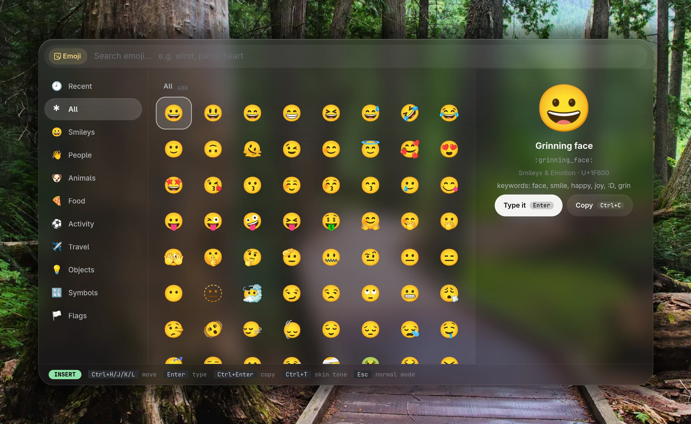

Vyom (व्योम) is Sanskrit for "sky": the space everything sits in.
Vyom replaces wofi in Vayu. Instead of scripts piping text rows into a generic list, each job is a tool: a small plugin with real layouts, live data, previews, toggles and a key for everything. Vyom is what they run in: one resident process with a shared panel, theme and plugin API, so every tool opens instantly and looks the same.
#The tools
Each tool is its own repository, so you install only the ones you want:
| Tool | What it does | |
|---|---|---|
| dvara | द्वार, gateway | app launcher: frequent apps first, app actions, open windows |
| ganit | गणित, mathematics | calculator: answers as you type, units, currency, history |
| smriti | स्मृति, memory | clipboard history: links, images, code told apart; pins |
| bhava | भाव, feeling | emoji: a grid, recents, skin tones; types it for you |
| tarang | तरंग, wave | Wi‑Fi with live signal, inline passwords, and the hotspot |
| setu | सेतु, bridge | Bluetooth: devices with battery, discovery, pairing |
| doot | दूत, messenger | your phone (KDE Connect): battery, send files, ring, browse |
| patra | पात्र, vessel | Docker: containers by project, live CPU/memory, logs |
| akashvani | आकाशवाणी, voice from the sky | notifications: on screen with actions, history, do not disturb |
| raga | राग, melody | YouTube music (into MPD) and video (mpv) |
| mudra | मुद्रा, gesture | keybinding search by what it does; Enter runs it |
| urja | ऊर्जा, energy | battery: charge, time left, health, power profile |
| vishram | विश्राम, rest | power menu: one letter each, countdown with cancel |
| kendra | केन्द्र, centre | quick settings: toggles, sliders, battery, lock, power |
#Install
Requirements: Python 3.11+, PyGObject (with pycairo, for tools that draw), GTK 4, gtk4-layer-shell, a compositor with the layer-shell protocol (sway, Hyprland, river, Wayfire, labwc…), and a Nerd Font for the icons.
# Arch
sudo pacman -S --needed python-gobject python-cairo gtk4 gtk4-layer-shell ttf-jetbrains-mono-nerd
git clone https://github.com/Theyashsawarkar/vyom ~/.local/share/vyom/core
ln -s ~/.local/share/vyom/core/bin/vyom ~/.local/bin/vyom
# then the tools you want, e.g.
git clone https://github.com/Theyashsawarkar/dvara ~/.local/share/vyom/plugins/dvara
git clone https://github.com/Theyashsawarkar/ganit ~/.local/share/vyom/plugins/ganitIn your compositor (sway shown):
exec vyom daemon # start it in the background at login
bindsym $mod+d exec vyom dvara # each tool on its own key; again closes it
bindsym $mod+c exec vyom ganit
layer_effects "vyom" { # SwayFX: blurred glass behind every panel
blur enable
corner_radius 20
shadows enable
}#Usage
vyom <tool> [args] open a tool (e.g. vyom tarang, vyom raga video); again closes it
vyom dmenu [-p PROMPT] [--markup] < lines
pick one line: printed on stdout, exit 1 on Esc (like wofi --dmenu)
vyom list installed tools, and why one is skipped
vyom daemon | reload | quit
vyom quick quick settings (the kendra tool)Vyom keeps one resident process (a GTK single-instance app). Once it's running, vyom <tool> only sends it a D-Bus message, so a panel opens in well under a tenth of a second. vyom dmenu makes any script's picker a Vyom panel: printf 'Accept\nReject\n' | vyom dmenu -p "Pair?".
Every panel: type to search, Up/Down (or Ctrl+K/Ctrl+J) move, Page Up/Page Down jump, Enter runs, Esc closes. A tool's tabs are its main kinds (ganit's Calculate and Convert, tarang's Networks and Hotspot), shown by name and switched the same way everywhere: Tab / Shift+Tab (or Ctrl+L/Ctrl+H) for the next/previous tab and Ctrl+1..9 (Ctrl+0: the tenth) by place, which each tab's tooltip says. A tool opens from its own key; Tab never leaves it for another tool. Each tool adds its own keys (shown in its footer and README).
| Key | Action |
|---|---|
Up / Down | Move to the previous / next result |
Ctrl+K / Ctrl+J | Move to the previous / next result |
Page Up / Page Down | Jump a page of results |
Enter | Open or run the selected result |
Tab / Shift+Tab | Switch to the next / previous tab (tools with tabs; wraps around) |
Ctrl+H / Ctrl+L | Switch to the previous / next tab (tools with tabs) |
Ctrl+1..9 | Switch to the first..ninth tab (Ctrl+0: the tenth; its tooltip says which) |
F11 | Toggle fullscreen (each tool remembers it) |
Esc | Close the panel |
On a card (the power menu, quick settings, the battery), Space never presses the focused button; Enter does.
#Vim keys
A tool written for them (modal = True, ADR 8) has vim's modes instead: in NORMAL mode every key is a command and typing changes nothing; in INSERT mode keys type (Esc goes back). The footer shows the mode, the keys typed so far and this mode's keys; after Space (or any prefix) a strip shows what comes next. The same keys work in every such tool:
| Key | Action |
|---|---|
j / k | Move down / up (a count first moves further: 5j) |
g g / G | Jump to the first / last result (5G: the fifth) |
Ctrl+d / Ctrl+u | Scroll half a page down / up |
H / L | Switch to the previous / next tab (Tab, Ctrl+H/L still work) |
/ | Search again: clear the box and type |
i | Type in the search box (insert mode) |
Enter | Open or run the selected result |
q | Close the panel |
Esc | Cancel a pending key, then clear the search, then close |
? | Show every key of this view |
Space Space | Open the palette: every action here, type to filter, Enter runs |
Space ? | Show every key of this view |
Space q | Close the panel |
Space t <initial> / Space t 1..9 | Switch to a tab |
Space u f | Toggle fullscreen (F11 too) |
Space r | Reload what the panel shows |
In insert mode: Esc back to normal, Ctrl+J/K move the results, Enter runs. On a card: j / k move between its controls, h / l move a slider (else left/right), 0 / $ its minimum/maximum, Enter toggles or opens. A question (deleting something) takes y for yes; any other key keeps things.
The Space groups mean the same in every tool, so a tool may leave one empty but never use its letter for something else: Space palette, ? keys, q close, t tabs, u toggles, y copy, f find, s sort, r refresh, a add, d delete, e edit, o open outside, g go to, m mark, , settings, k ask AI. A tool's own groups use the other letters (b c h i j l n p v w x z).
#Configuration
~/.config/vyom/config.toml, all optional (examples/config.toml):
[vyom]
disabled = ["raga"] # installed tools not to load
width = 900 # every panel opens at this size (times scale = 1.25)
height = 520
opacity = 0.72 # panel background: 1 solid, lower = more glass
warm_up = true # draw the launcher once off screen at start, so the first opening is instant
release_after = 600 # seconds a rarely used hidden panel keeps its surface (graphics memory); false: always
keep = ["dvara", "ganit"] # panels that always keep theirs (the launcher always does)
keep_often = 5 # ...and any opened this many times in the last week (0: off)
live = true # publish the live system state for other programs (ADR 12); panels use it either way
css = ["~/.local/state/varna/vyom.css"] # more stylesheets, loaded last (a theme's colours)
[plugin.tarang] # each tool's settings: see its README
hotspot_command = "vayu-hotspot"
keep = true # in any tool's section: always keep (true) or may let go (false)#Live state
Vyom follows the system once, for its whole life, by the signals its daemons send anyway: NetworkManager (Wi-Fi, the hotspot, wired), BlueZ (the adapter, every device and its battery), UPower, power-profiles-daemon, the sound server (pactl subscribe), the backlight (udev), systemd user units and the GNOME colour scheme. Nothing polls; with nothing changing, nothing wakes. Panels read it (from vyom import live: live.get("wifi") is a dict at once, live.watch(name, fn) while they show), so they open on the current state without running a command (ADR 12).
Graphs open with their history drawn (ADR 13): live.history("net") is the last minute of each connected device's speed (its byte counters, read every 2 s while something is connected, every second while a panel draws them; about 0.3 wakeups a second), live.history("battery") the charge over the last hours (UPower's own record and every change since). Not in the state files or pushed on D-Bus; History(name) on dev.vayu.Vyom.State returns one when asked.
Other programs get the same, from one owner: the D-Bus object /dev/vayu/Vyom/State on dev.vayu.Vyom (interface dev.vayu.Vyom.State: a JSON string property per source, PropertiesChanged, Get(name)), and $XDG_RUNTIME_DIR/vayu/state/<name>.json, replaced by an atomic rename only when it changes. Sources: wifi (without the scan list), bluetooth, battery, power_profiles, volume, brightness, units, theme. A source is published at most four times a second, except the two you change a step at a time (ADR 14): volume at once (the default output: sink, device, volume, muted, and bus, api, form_factor, port to tell earbuds from a TV; {"sink": ""} with no output, null while nothing follows the sound server) and brightness up to 20 times a second. Vayu's bar capsule and ekatva's phone panel follow these instead of watching the sound server and the backlight themselves.
gdbus call --session -d dev.vayu.Vyom -o /dev/vayu/Vyom/State -m dev.vayu.Vyom.State.Get battery
cat $XDG_RUNTIME_DIR/vayu/state/wifi.json~/.config/vyom/style.css loads after the tools' styles, to restyle anything; the css files load after that. Colours are named (@base, @text, @accent, @mauve...: Catppuccin Mocha by default), so a theme only has to redefine them: varna writes such a file.
#Writing a tool
A tool is a directory with a plugin.toml and a Python package of the same name exporting a Plugin class:
# plugin.toml
name = "hello"
title = "Hello"
version = "0.1.0"
vyom = "0.2"
icon = "" # Nerd Font glyph for the mode pill
color = "mauve" # sky blue teal red peach mauve yellow green rose lavender
requires = [] # tools it needs; it's skipped (with the reason) without them# hello/__init__.py
from vyom import Hint, Plugin as Base, Row, Section, ui, util
class Plugin(Base):
preview = True # a preview pane on the right
hints = [Hint("Enter", "greet")]
tabs = [("people", "People"), ("places", "Places")] # optional: Ctrl+H/L, Ctrl+1..9
def search(self, query): # runs in a worker thread
return [Section("People"), Row("World", "the usual", icon="", data="world")]
def build_preview(self, row): # main thread
return ui.vbox(ui.title(f"Hello, {row.title}"), ui.meta("a preview"))
def activate(self, row, mods): # Enter; return True to close
util.notify("Hello", row.data)
return TrueLayouts: "list" (rows, sections, preview), "grid" (cells, like the emoji picker) and "card" (build the whole panel in build_card()). A list can show a status strip above its rows (build_strip(): what's connected, what needs you), and a Row can carry coloured chips and signal bars (level, level_text, level_color). vyom.ui has the shared pieces: hero, ring, bars, meter, steps, notice, segmented, and buttons that show their key (ui.button("Forget", forget, "danger", key="Ctrl+F")), and an on/off ui.switch for a header. The footer shows hints, or tab_hints() when the keys differ by tab (or mode); a set_status("…") message takes their place while it shows, so it's never cut short. See vyom/plugin.py for every hook (tabs with self.tab, tab_changed and select_tab; header_extra, key, opened, closed, live, anchor, prewarm to fill caches while Vyom is idle after it starts…), vyom/ui.py for widgets (warm_icons for a tool's icons), and any tool repo for a worked example. Put it in ~/.local/share/vyom/plugins/hello (or a directory in $VYOM_PLUGIN_PATH) and vyom reload.
#Vim keys in a tool
Set modal = True and return the tool's keys as data from keys(tab); the panel does the modes, counts, sequences, which-key strip, help and palette:
from vyom.keys import Bind
class Plugin(Base):
modal = True
start_mode = "insert" # a search-first tool; "normal" for one you manage things in
key_groups = {" c": "container"} # names for the tool's own Space groups
def keys(self, tab):
return [Bind("dd", "remove", "Remove the container (asks first)"),
Bind(" cr", "restart", "Restart the container"),
Bind(" yy", "copy", "Copy the name")]
def v_remove(self, count, arg): # an action "verb:arg" runs v_<verb>(count, arg)
row = self.panel.selected_row()
self.confirm(f"Remove {row.title}?", lambda: ...)A bind with the same keys as one of the panel's replaces it. A card lists its text boxes in editables() (they type only in insert mode); escape() takes Esc first (unpick something); mode_hints(mode) gives the footer's keys per mode; key() still sees every key first, for a tool's own overlay. vyom.keys.annotations() writes the # keybind: lines from the same binds (ganit's scripts/keybinds.py is an example). The panel also gives every modal tool Space u p (show or hide the preview, remembered per tool) and, on a card, a visible cursor on the focused control; a tool can add a side rail left of its results with build_rail() (tabs_in_rail = True when the rail shows its tabs). Python tools outside Vyom vendor the keys module with scripts/vendor-keys.sh <file>.
#Troubleshooting
- A tool doesn't open.
vyom listshows every installed tool and why one is skipped (a missing requirement, or a Vyom too old for it). - Something failed. The daemon logs to the journal:
journalctl --user -u vyom -u vyom-daemon -b(without systemd:~/.local/state/vyom/daemon.log); look for aTraceback.vyom quit; vyom <tool>restarts it. - "Failed to initialize layer surface" / panels open as normal windows. gtk4-layer-shell has to load before GTK;
vyom daemondoes this itself throughLD_PRELOAD, so start Vyom withvyom daemon, notpython -m vyom.app. - No blur or rounded corners. That's the compositor's part: on SwayFX use the
layer_effects "vyom"block above; Hyprland:layerrule = blur, vyom. - Icons show as boxes. Install a Nerd Font.
#Contributing
Bug reports, ideas and pull requests are welcome: see CONTRIBUTING.md for the development setup and the API rules, and CHANGELOG.md for what changed in each release. A problem with one tool belongs in that tool's repository. Please report security issues privately (SECURITY.md).